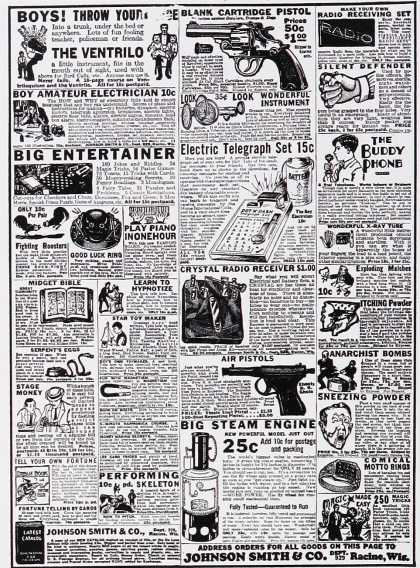
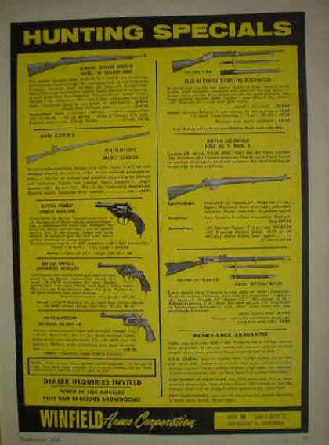

- 
- 


1900s
Founded in 1871, the NRA's interest in promoting the "shooting sports" among America's youth began in 1903 with the establishment of rifle clubs at all major colleges, universities and military academies.
1910s
1920s
1930s
The 1929 Saint Valentine's Day massacre, a Prohibition-era mass shooting by machine gun, prompted the National Firearms Act of 1934. Since 1934, fully automatic weapons fall under the regulation and jurisdiction of the Bureau of Alcohol, Tobacco and Firearms (ATF).
1940s
1950s
1960s
A milestone in gun control legislation was the Gun Control Act of 1968, written in response to the assassination of John F. Kennedy. The legislation expanded licensing dealers, made it illegal to to mail order long guns, and it also established that convicted felons, drug users, and the mentally ill can be prohibited from possessing firearms.
1970s
1980s
The 1986 Hughes Amendment to the National Firearms Act made it illegal to sell automatic firearms made after May 19, 1986 to civilians.
1990s
The 1990 Crime Control Act established "gun-free school zones" and penalties for those carrying or discharging firearms in these zones.
The 1993 Brady Handgun Violence Prevention Act established a 5 day waiting period and mandatory background check for handgun purchases as well as setting up the National Instant Background Check System (NICS) that is used today for every purchase performed through an FFL dealer.
2000s
Following the 129th NRA convention on May 20th 2000, actor, and NRA president Charlton Heston famously said, "I'll give you my gun when you pry it from my cold, dead hands."
Threatened by long-term declining participation in shooting sports, the firearms industry has poured millions of dollars into a broad campaign to ensure its future by getting guns into the hands of more, and younger, children. Read more.